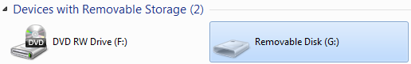
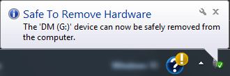
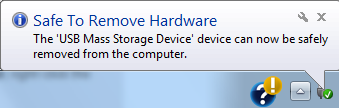

How To – Safely Connect and Disconnect a USB Drive
This How To provides the steps required to safely connect and disconnect a USB Drive to a computer.
To Connect a USB Drive
- Manually connect the USB drive to a USB port on the computer.
To Disconnect a USB Drive
This procedure must be performed prior to disconnecting the USB drive from the computer. Failure to safely remove the USB drive can result in corrupted data.
This procedure assumes that the computer is running. If the computer is not running, the USB drive can be directly disconnected from the computer without performing the procedure below.
From the Start panel:
- On the Windows PC, click Start, and then click Computer.
- Right-click the icon for the USB drive.

- Click Eject. The following mesage is displayed.

- Manually disconnect the USB drive from the computer.
From the Windows taskbar:
- On the Windows PC taskbar, click the Safely Remove Hardware icon .
- Click Eject USB Mass Storage Device. The following mesage is displayed.

- Manually disconnect the USB drive from the computer.